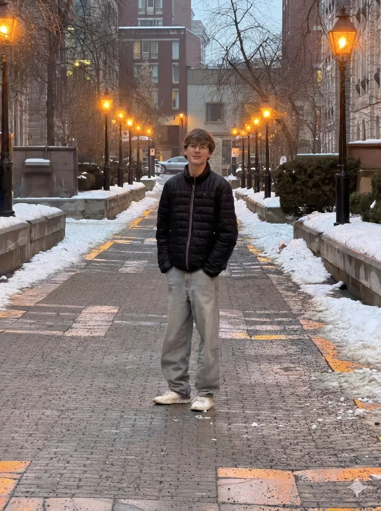

About Me
Hi, I'm Jonah.
I build websites for people, take photos, and edit videos. I'm a student at Lincoln Sudbury Regional High School, class of 2028. Feel free to contact me about purchasing a website of your own!


Who I am
Hi! My name is Jonah Feinberg. I'm currently a student at Lincoln Sudbury Regional High School, class of 2028. I spend my time building websites, editing videos, playing volleyball, or walking my dog, Jasper.
I'm drawn to subjects that are intersected by people and how they function: psychology, sociology, and sometimes computer science. I find it interesting how technology can shape human behavior and how understanding people can make you a better builder.
I've had the opportunity to captain the JVA volleyball team and play on the Boston United National team, as well as closely connect with a diverse group of friends and peers, which has taught me the importance of effective communication.
I value creativity, collaboration, and using my skills to help others. I'm interested in exploring psychology, potentially alongside computer science, to better understand how people think and how technology can be designed to serve them more effectively.

Mepurchase a website
Need a website? Let's talk.
I design and build any website you might need; a personal site, small business site, portfolio, anything! Clean, affordable, fast, and built from scratch for your needs. Server/domain management and maintenance are also available!